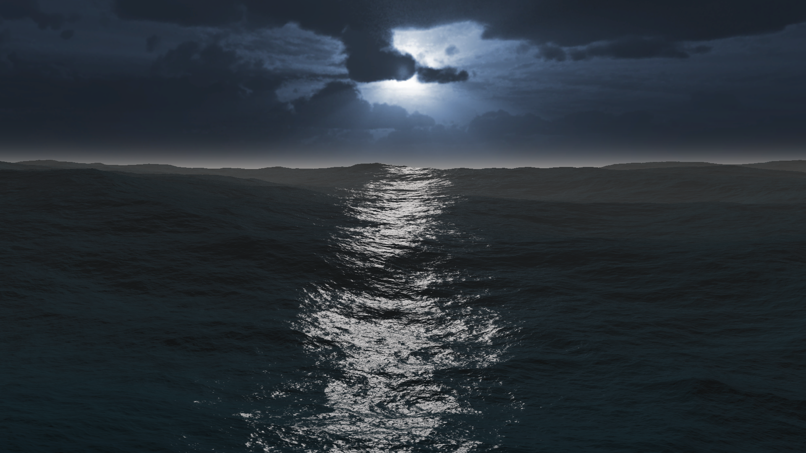
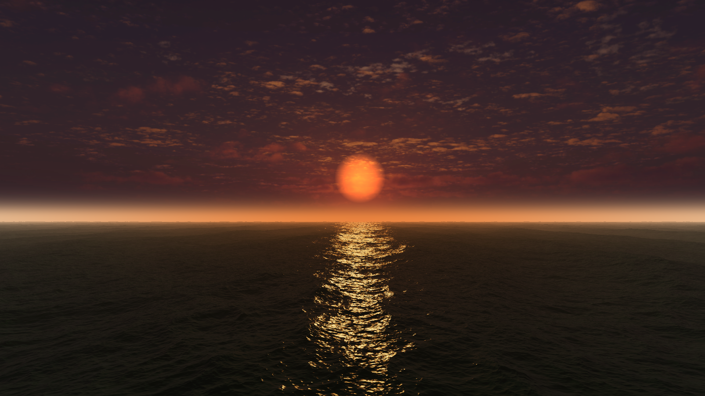
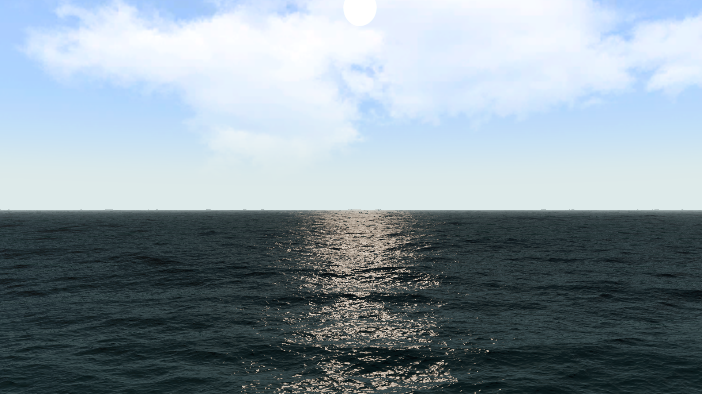
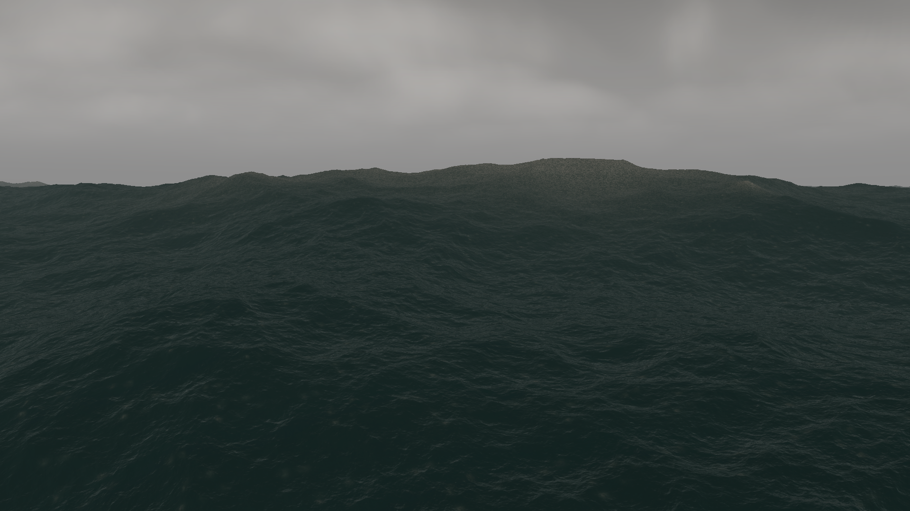
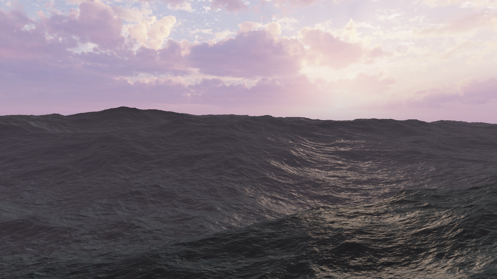
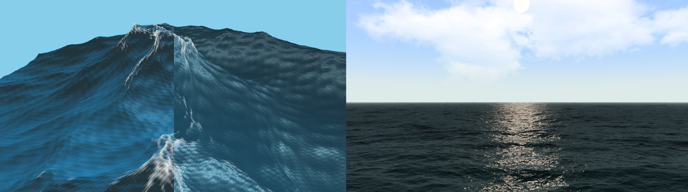
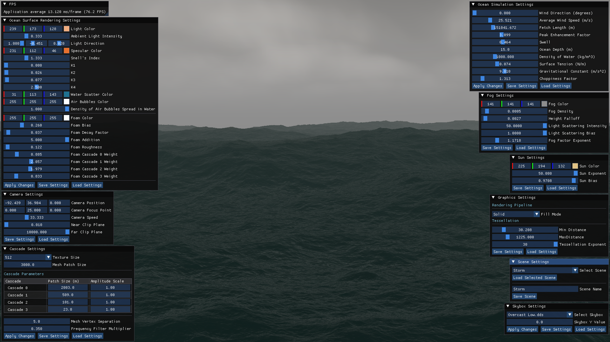

FFT Ocean Simulation
Project Overview
This project is a custom real-time ocean surface simulation and rendering pipeline built from scratch in C++ and DirectX 11. Rather than relying on commercial game engines or simpler kinematic approximations, the simulation is driven by statistical oceanographic spectra evaluated through the Fast Fourier Transform (FFT). Following the frequency-domain wave decomposition paradigm pioneered by Jerry Tessendorf, the system generates realistic, non-repeating seascapes that dynamically react to physical environmental parameters. The primary objective was to master low-level graphics programming, general-purpose GPU (GPGPU) compute pipelines, hardware tessellation and physically based fluid optical phenomena.





Swipe or scroll to view ocean simulation screenshots.
Iterative Development: From Kinematic Waves to a Spectral Ocean
The project didn't start with the full spectral pipeline. Early prototypes validated the rendering architecture using much simpler kinematic models computed directly in the vertex shader: first a sum-of-sines height field, then Gerstner (trochoidal) waves to get sharper crests and wider troughs. Both were useful learning steps, but both share the same fundamental limitation: their cost scales as O(V×W), directly tying simulation detail to the number of vertices on screen. Reaching the thousands of overlapping waves needed for a convincing, non-repeating ocean this way is computationally infeasible in real time. Hitting that wall is exactly what justified the move to a fully spectral, GPU-compute-driven architecture that decouples the physics simulation from the rendered geometry entirely.

Side-by-side comparison of the early Gerstner wave prototype against the final spectral ocean
Technical Architecture & Implementation
The simulation pipeline combines several mathematical and rendering techniques to evaluate and display the ocean surface in real time:
- Low-Level Engine & API: Built on top of a custom rendering engine written from scratch in C++ and DirectX 11, giving full control over the graphics pipeline, GPU memory and shader execution. The engine's internal architecture (managers, object abstractions, the post-processing framework) is a project of its own and will get a dedicated portfolio entry.
- Statistical Wave Modelling: Implements J. Tessendorf's Simulating Ocean Water together with the JONSWAP spectrum to generate the ocean's initial frequency-domain state from physical parameters. A TMA correction adapts the deep-water model to finite ocean depths, while a Donelan-Banner spreading function handles directional wind alignment.
- GPGPU Compute Pipeline: The initial spectrum, its time evolution and the Inverse Fast Fourier Transform (IFFT) run as local Compute Shader passes in VRAM, bypassing the slow PCIe bus bandwidth bottlenecks of CPU-to-GPU memory copies.
- Wave Cascading: Four independent FFT grids, using non-multiple prime patch sizes (23m, 101m, 509m, 2003m), are superimposed to simulate everything from massive swells down to high-frequency capillary ripples without visible horizon tiling.
- Dynamic Tessellation & LOD: Hardware Hull and Domain shaders evaluate camera distance to patch boundaries to dynamically subdivide the mesh, concentrating vertex density strictly within the viewer's immediate focal area.
- Physically Based Microfacet Rendering: The pixel shader evaluates a Cook-Torrance BRDF driven by a per-pixel anisotropic covariance matrix reconstructed from the FFT's second-order moments, incorporating Beckmann slope distributions, Smith masking-shadowing, LEADR mapping and volumetric subsurface scattering.
- Procedural Foam: Breaking waves are identified via negative sign flips in the spatial Jacobian determinant; the spawned foam mask decays exponentially over time and is spatially blurred to simulate diffusing aerated bubbles.
- Extensible Post-Processing: Leverages a custom screen-space ping-pong buffer architecture to apply an exponential height fog. The pixel shader reconstructs world coordinates from the depth buffer to attenuate visibility over distance, dynamically blending the fog tint toward the directional light source based on view alignment.
- Real-Time Tooling: A Dear ImGui front-end grants real-time manipulation over compute-bound parameters (wind, fetch, peak enhancement) that trigger instant compute re-dispatches, alongside immediate visual feedback over lighting and camera states.
By dynamically adjusting the JONSWAP spectrum parameters, such as wind speed and fetch length, the engine can simulate a vast range of sea states in real-time, from calm waters to turbulent, storm-driven swells.
Deep Dive: Spectral Evolution & The Compute Pipeline
The mathematical core of the engine operates entirely within the frequency domain across an N×N (usually 256×256) discrete grid known as k-space. Rather than storing spatial heights, each texel represents a unique horizontal wave vector k, encoding its spatial frequency, physical travel direction and complex amplitude. Bypassing step-by-step numerical integration entirely, the simulation achieves unconditional stability by evaluating Euler's formula (eiωt) against the absolute elapsed time. Crucially, surface slopes are derived purely algebraically by multiplying the wave's complex amplitude by an imaginary wavenumber factor (ik), eliminating the visual aliasing and heavy texture-read overhead of standard spatial finite differences.
// TimeEvolutionCS.hlsl - Unconditional time integration & algebraic spatial derivatives
float2 phase = float2(cos(omega * m_Time), sin(omega * m_Time));
float2 hKT = ComplexMult(h0, phase) + ComplexMult(h0_conj, float2(phase.x, -phase.y));
// Algebraic derivative swizzle: multiplying complex height by imaginary unit i
float2 ihKT = float2(-hKT.y, hKT.x);
float2 dispX = ihKT * (k.x / kLength);
float2 dispZ = ihKT * (k.y / kLength);
float2 slopeX = ihKT * k.x;
float2 slopeZ = ihKT * k.y;Once evolved, the packed frequency data is handed off to the FFTManager, which dispatches separable horizontal and vertical Radix-2 Cooley-Tukey compute passes to invert the grid back into physical 3D space. A final compute pass evaluates the cross product of the inverted spatial derivatives to generate accurate surface normals, while simultaneously calculating the spatial Jacobian determinant. Areas where J < 0 mathematically flag vertex "folding", procedurally injecting turbulent whitecap foam into the scene.
Deep Dive: Physically Based Microfacet Water Shading
To shade the displaced mesh with strict thermodynamic energy conservation, the early prototype Blinn-Phong model was deprecated in favor of a microfacet BRDF. The ocean is treated as a probabilistic distribution of microscopic, perfectly reflective mirrors across three scales of geometric abstraction: the untessellated macronormal, the explicitly tessellated mesonormal and the sub-resolution statistical micronormal.
During rasterization, the Pixel Shader extracts the compute pipeline's second-order moments texture to construct an anisotropic 2×2 Covariance Matrix (Σ). This matrix defines the exact localized surface roughness, feeding directly into an anisotropic Beckmann Normal Distribution Function (D) that stretches sun reflections realistically along the dominant wind vector. Self-shadowing inside deep wave troughs is handled via the Smith G2 uncorrelated masking function (optimized via rational polynomials to avoid heavy run-time integration) while view-dependent dielectric reflectivity is evaluated via a roughness-modified Schlick Fresnel approximation. Finally, direct sun specular is corrected for statistically displaced geometry using LEADR mapping, while an empirical volumetric transport equation illuminates wave crests from within via subsurface scattering.
Interactive Tooling & State Serialization
Because the simulation exposes dozens of interconnected mathematical variables, from JONSWAP fetch lengths to microfacet scattering coefficients, the engine integrates Dear ImGui to act as an immediate technical art bridge. Modifying compute-bound parameters automatically invalidates the current k-space state and triggers a silent re-dispatch of the initial spectrum compute shader. To support practical workflow iterations, the front-end features a robust state serialization system allowing developers to snapshot the complete environment state (ocean, skybox, camera, fog) to local binary data files (such as CameraSettings.bin) and recall complex sea presets instantly.

The custom Dear ImGui interface allows developers to instantly serialize and recall complete environmental states, including oceanographic variables, lighting and camera data, to local binary files for rapid iteration.
Challenges Overcome
- Overlapping Frequency Cascades: early on, combining the four FFT cascades produced chaotic, exaggerated wave displacement. The cause was frequency overlap: multiple cascades generating wave vectors for the same physical frequency and effectively doubling its energy. The fix was a strict band-pass filter, derived from the Nyquist-Shannon sampling theorem, that culls each cascade to its own exclusive frequency band before it ever reaches the FFT.
- NaN Propagation: certain lighting and BRDF equations could occasionally divide by zero, corrupting the rendered surface with NaN values that spread across the frame. Stepping through the pipeline frame-by-frame in RenderDoc traced the issue to specific denominators in the Pixel Shader, which were then clamped to a small minimum threshold to permanently stabilise the shading output.
- T-Junctions & Mesh Tearing: calculating the tessellation factor from the distance between the camera and each patch's centre caused neighbouring patches to pick different LOD levels, opening visible gaps in the mesh. Evaluating the distance to the patch's edges instead solved the mismatch and closed the mesh completely.
- Pipeline Debugging: with several sequential compute passes feeding into each other, a single bad value could originate anywhere upstream. Capturing frames in RenderDoc and inspecting the Unordered Access Views at every stage made it possible to isolate exactly which step of the simulation was failing.
Future Roadmap & Next Steps
With the core simulation and rendering pipeline complete, future iterations of this project will focus on turning it into a fully interactive system rather than a purely visual one:
- Buoyancy via Asynchronous GPU Readback: the ocean is currently a purely visual surface. Reading the GPU-resident displacement data back to the CPU without stalling the rendering pipeline would let rigid bodies realistically float and pitch with the waves.
- Dynamic Wakes & Fluid Interaction: the spectral model is excellent at simulating ambient, wind-driven waves, but it cannot represent localised disruptions such as a ship cutting through the water. Future work will explore flow maps or lightweight local fluid simulations layered on top of the FFT ocean.
- Audio Subsystem Integration: extending the engine with a spatial audio module, procedurally triggered by the same Jacobian-based wave-breaking detection already used for foam, to play crashing and whitecap sounds exactly where and when they visually occur.
Core Implementation Highlight: Dispatching the Compute Shader
Generating the initial frequency spectrum requires binding specific constant buffers and Unordered Access Views (UAVs) to the pipeline immediately before dispatching the compute shader. Because the thread group size is defined as (16, 16, 1), the dispatch dimensions must dynamically adapt to fit the chosen texture resolution. This dispatch logic executes across all four cascades whenever the environmental simulation settings are modified.
void OceanComputeManager::GenerateInitialSpectrum(bool initial)
{
RecalculateFrequencyFilters();
ID3D11DeviceContext* context = D3D11Application::GetInstance().GetDeviceContext();
context->CSSetShader(m_InitialSpectrumComputeShader, nullptr, 0);
InitializeOceanSimulationSettings(initial);
m_OceanSimulationSettingsBufferData.m_OceanTextureSize = m_OceanSimulationCascadeSettings.m_OceanTextureSize;
// Calculate physical parameters
m_OceanSimulationSettingsBufferData.m_PeakFrequency = pow(22.0f * m_OceanSimulationSettingsBufferData.m_GravitationalConstant * m_OceanSimulationSettingsBufferData.m_GravitationalConstant / max(m_OceanSimulationSettingsBufferData.m_AverageWindSpeed * m_OceanSimulationSettingsBufferData.m_FetchLength, 0.01f), 1.0f / 3.0f);
m_OceanSimulationSettingsBufferData.m_Alpha = 0.076f * pow(m_OceanSimulationSettingsBufferData.m_AverageWindSpeed * m_OceanSimulationSettingsBufferData.m_AverageWindSpeed / (m_OceanSimulationSettingsBufferData.m_GravitationalConstant * m_OceanSimulationSettingsBufferData.m_FetchLength), 0.22f);
m_OceanSimulationSettingsBufferData.m_WindAngle = m_OceanSimulationSettingsBufferData.m_WindDirection * (PI / 180.0f); // Convert to radians
m_OceanSimulationSettingsBufferData.m_RandomSeed = rand();
// Dispatch the compute shader for each cascade
for (int i = 0; i < CASCADE_COUNT; i++)
{
m_OceanSimulationSettingsBufferData.m_PatchSize = m_OceanSimulationCascadeSettings.m_OceanPatchSize[i];
m_OceanSimulationSettingsBufferData.m_LowPassFilter = m_LowPassFilters[i];
m_OceanSimulationSettingsBufferData.m_HighPassFilter = m_HighPassFilters[i];
m_OceanSimulationSettingsBufferData.m_CascadeAmplitude = m_OceanSimulationCascadeSettings.m_CascadeAmplitudes[i];
context->UpdateSubresource(m_d3dOceanSimulationSettingsBuffer, 0, nullptr, &m_OceanSimulationSettingsBufferData, 0, 0);
context->CSSetConstantBuffers(0, 1, &m_d3dOceanSimulationSettingsBuffer);
context->CSSetUnorderedAccessViews(0, 1, &m_InitialSpectrumUAV[i], nullptr);
// Adapt the dispatch groups to the texture resolution
UINT groupsX = m_OceanSimulationCascadeSettings.m_OceanTextureSize / 16;
UINT groupsY = m_OceanSimulationCascadeSettings.m_OceanTextureSize / 16;
context->Dispatch(groupsX, groupsY, 1);
// Unbind UAV to prevent read/write hazards
ID3D11UnorderedAccessView* nullUAV[1] = { nullptr };
context->CSSetUnorderedAccessViews(0, 1, nullUAV, nullptr);
}
}